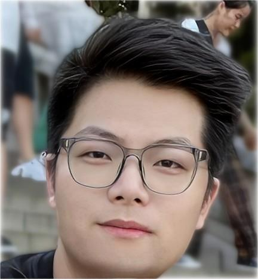
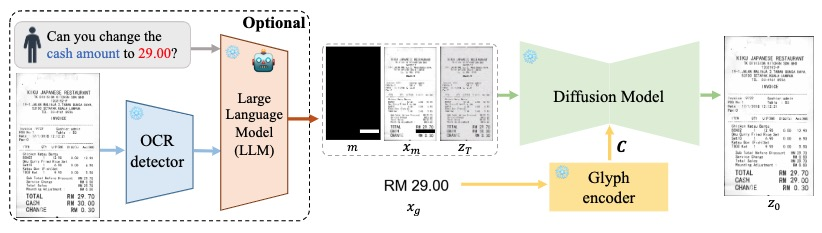
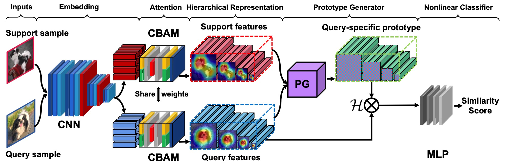
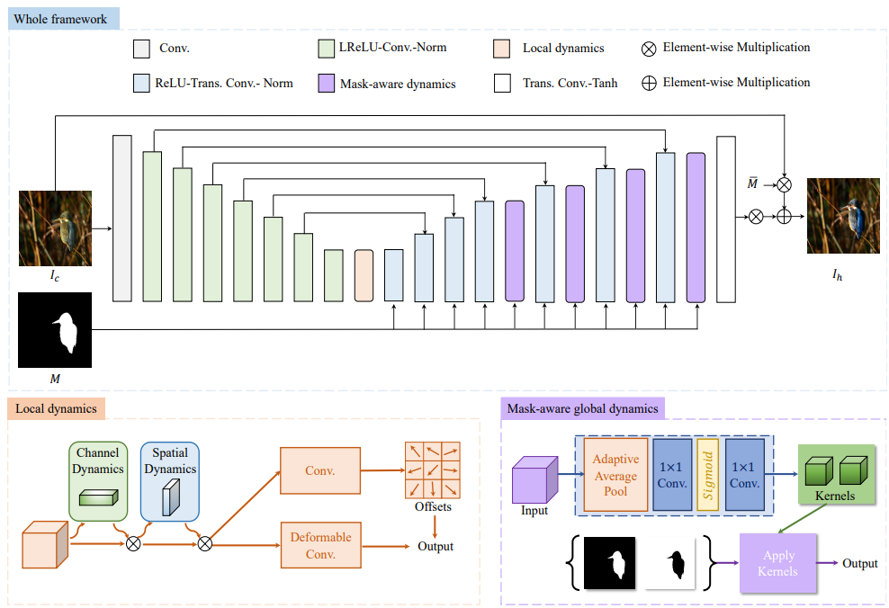
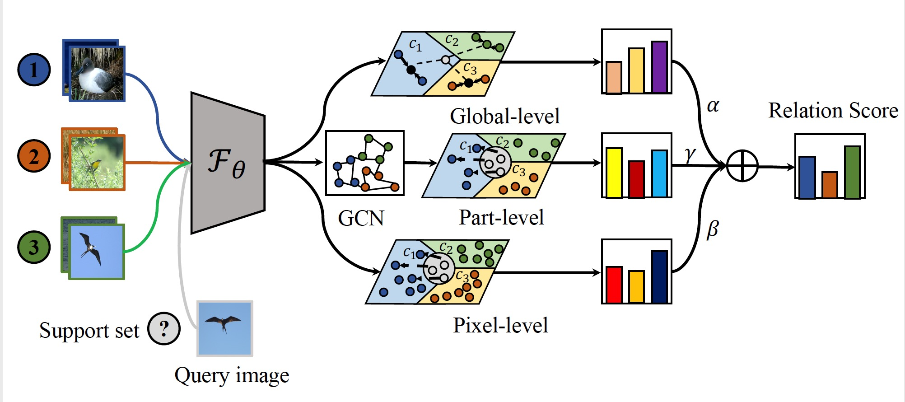

|  |
Yaohui Li
(李耀辉)
|
About Me
Currently I am a Phd candidate supervised by Assoc. Prof. Jianbing Zhang and Prof. Xinyu Dai at School of Artifical Intelligence in Nanjing University, which is led by Prof. Zhihua Zhou. Besides, I am also a member of NJUNLP group, which is led by Prof. Jiajun Chen. Before that, I received my M.S. and B.S. degree from Nanjing University in 2023 and 2020 respectively, supervised by Prof. Huaxiong Li.Research Interest
I work in the field of computer vision, vision-language pre-training and few-shot learning. Currently, I mainly focus on the following research topics:- Label-efficient learning: Learning with limited data effectively is an essential and promising topic in both industry and academia. I mainly work on learning generalizable representations from limited data for fast adaptation on target domains.
- Vision-language model (VLM): Vision-language pre-training models have shown wide and promising future in research and applications. I mainly work on visual perception and AIGC with the assistance of VLMs.
Recent News
- [2023.07]: One paper on “Image composition” is accepted to ACM Multimedia 2023 (CCF-A).
- [2023.01]: One paper on “Few-shot learning” is accepted to SCIS 2023 (CCF-A).
- [2022.07]: One paper on “Affective computing” is accepted to ACM Multimedia 2022 (CCF-A).
- [2022.06]: One paper on “Few-shot learning” is accepted to ICPR 2022.
- [2022.06]: One paper on “Few-shot learning” is accepted to ICANN 2022.
- [2022.05]: One paper on “Few-shot learning” is accepted to SPL 2022.
- [2021.07]:One paper on “Few-shot learning” is accepted to PRCV 2021.
Preprints
-
Haoxing Chen, Zhuoer Xu, Zhangxuan Gu, Jun Lan, Xing Zheng, Yaohui Li, Changhua Meng, Huijia Zhu, Weiqiang Wang.
DiffUTE: Universal Text Editing Diffusion Model.
arXiv preprint arXiv: 2305.10825 , 2023.
[Paper] [Code] -
Yaohui Li , Huaxiong Li, Haoxing Chen, Chunlin Chen.
Hierarchical Representation based Query-Specific Prototypical Network for Few-Shot Image Classification.
arXiv preprint arXiv: 2103.11384 , 2021.
[Paper]
|  |
|
|  |
|
Publications
-
Haoxing Chen, Zhangxuan Gu, Yaohui Li, Jun Lan, Changhua Meng, Weiqiang Wang, Huaxiong Li.
Hierarchical Dynamic Image Harmonization.
In: ACM International Conference on Multimedia (ACM MM), 2023. (CCF-A)
[Paper] [Code] -
Haoxing Chen , Huaxiong Li, Yaohui Li, Chunlin Chen.
Sparse Spatial Transformers for Few-Shot Learning.
In: Science China Information Science (SCIS) , 2023, in press. (CCF-A, IF=8.8)
[Paper] [Code] -
Yaohui Li, Yuzhe Yang, Huaxiong Li, Haoxing Chen, Liwu Xu, Leida Li, Yaqian Li, Yandong Guo.
Transductive Aesthetic Preference Propagation for Personalized Image Aesthetics Assessment.
In: ACM International Conference on Multimedia (ACM MM), 2022. (CCF-A)
[Paper] [Video] -
Haoxing Chen , Huaxiong Li, Yaohui Li, Chunlin Chen.
Shaping Visual Representations with Attributes for Few-Shot Recognition.
IEEE Signal Processing Letters, vol. 29, pp. 1397-1401, 2022. (CAA-B, SCI/SCIE, IF=3.201)
[Paper] [Code] -
Haoxing Chen , Huaxiong Li, Yaohui Li, Chunlin Chen.
Multi-level Metric Learning for Few-shot Image Recognition.
In: International Conference on Artificial Neural Networks (ICANN), 2022. (CCF-C)
[Paper][Code] -
Haoxing Chen , Huaxiong Li, Yaohui Li, Chunlin Chen.
Multi-scale Adaptive Task Attention Network for Few-Shot Learning.
In: International Conference on Pattern Recognition (ICPR), 2022. (CCF-C)
[Paper] [Code] -
Yaohui Li , Huaxiong Li, Haoxing Chen, Chunlin Chen.
Local Mutual Metric Network for Few-Shot Image Classification.
In: Chinese Conference on Pattern Recognition and Computer Vision (PRCV), 2021. (CCF-C)
[Paper] - 2021.6-2022.7 Research Intern at OPPO Research Institute of Shanghai, supervised by Yuzhe Yang and Yaqian Li.
- Outstanding Graduates, Nanjing University, 2023
- National Scholarship, highest scholarship in China, Ministry of Education, China, 2022
- Outstanding Graduate Student, Nanjing University, 2021
- Industrial Bank Scholarship, Jiangsu Province, 2021
- 1st Prize, Academic Scholarship, Nanjing University, 2020 & 2022
- National Grand Prize, Educational Robot Competition Of China (ERCC), 2018
- Conference Reviewer of ACM MM 2023, AAAI 2023, ICPR 2022.
- Journal Reviewer of IEEE TIP, TNNLS
|  |
|

|
|

|
|

|
|
|  |
|

|
|

|
|